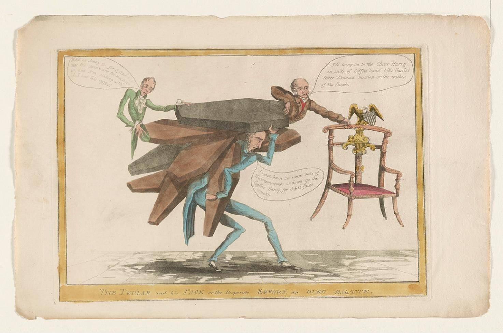

| Field | Detail |
| TOC Fit | Chapter 9 · Essay prompt 9.5 (Why Jackson Won in 1828) |
| Why Here | A pro-Jackson cartoon showing the anti-Jackson “coffin handbill” campaign collapsing under its own weight, with Adams clinging to the presidential chair. Students can read it as an argument by its maker about which side the “people” were on and about the role of personal attacks in the campaign. |
| Treatment | Public-domain image; speech balloons transcribed from the repository’s description |
By 1828 political cartoons were sold as single prints in eastern cities. This one targets John Binns, the Philadelphia editor whose “coffin handbills” accused Jackson of executing militiamen in 1815. Binns staggers under a pack of coffins, on top of which sit Henry Clay and President John Quincy Adams. Binns asks for more “Treasury-pap,” a jab at the government printing contracts that rewarded friendly editors. Clay warns that “the people are too much for us,” and Adams vows to hang on to the chair despite the handbills, a letter by the Kentucky politician Harris, the Panama mission, and “the wishes of the People.” The cartoonist presents the attacks on Jackson as a desperate effort by a corrupt administration against the popular will. The Library of Congress attributes it to James Akin on the basis of style. Editorial note. Image from the Library of Congress Prints and Photographs Division (PC/US - 1828.A000, no. 27), a colored impression digitized from the original (LC-DIG-ds-00847); the Library states “No known restrictions on publication.” The speech-balloon text below is transcribed from the Library’s catalog description and should be checked against the image when it is captured. The attribution to James Akin is the Library’s, based on similarities to his signed prints, and is not certain. The planner’s note that the cartoon’s target was unconfirmed is resolved: the pack-carrier is John Binns. The Norton Source Collection does not include this print. CAUTION: The cartoon is pro-Jackson propaganda and should be read as an argument by its maker. Text transcribed for this reader from the repository image; illegible words are marked [illegible]. The balloon texts were checked against the captured image and agree with the catalog wording. |
|
 |
|
UNIT 3 · AN EXPANDING NATION | HISTORY B17A | DANIEL GARZA, M.A.
|